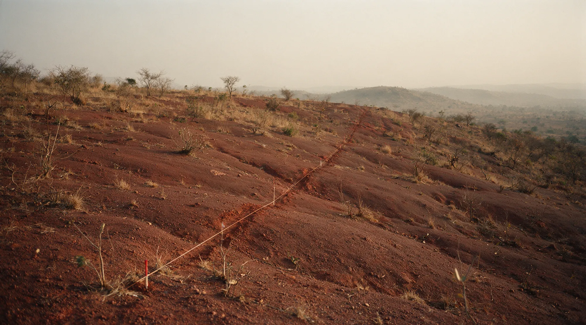

Corporate disclosure
What we are, on the record.
Incorporation, governance, monitoring, reporting standards and the land plan. The register a counterparty asks for before anything else.
Corporate Disclosure Registry
- 01
- 02
- 03
- 04
- 05
- 06

- Core values
The Core Values That Guide Every Decision
- 01
- 02
- 03
- 04
- Separated units
- Operational risk is separated between the mining and farming units
- Monitoring
- Quarterly independent monitoring of groundwater quality and soil toxicity
AI & ML-Driven Mining Operations
- 01
- 02
- 03
- 04
- 05
- 06
- Note on figures
- The performance figures in this section are carried over from Danbiba’s existing published material and are set as prose, not as counters. They should be verified before launch.
Every figure here is available with its source.
Audit records, monitoring results and licence documentation are shared with regulators, institutional investors and counterparties on request.
- Headquarters Location:
- Block 155, Room 9/10, Area C, Nyaya, Abuja, FCT, Nigeria
- Electronic Mail:
- danbiba2008@outlook.com